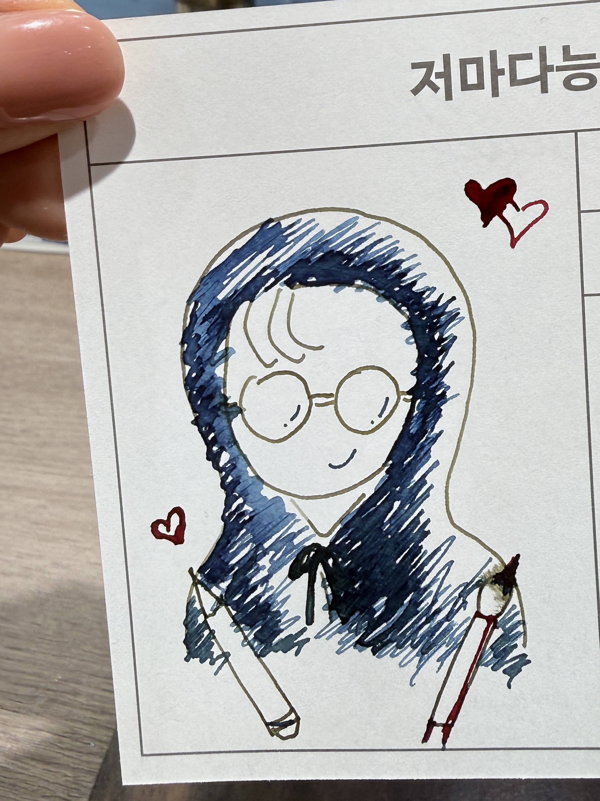
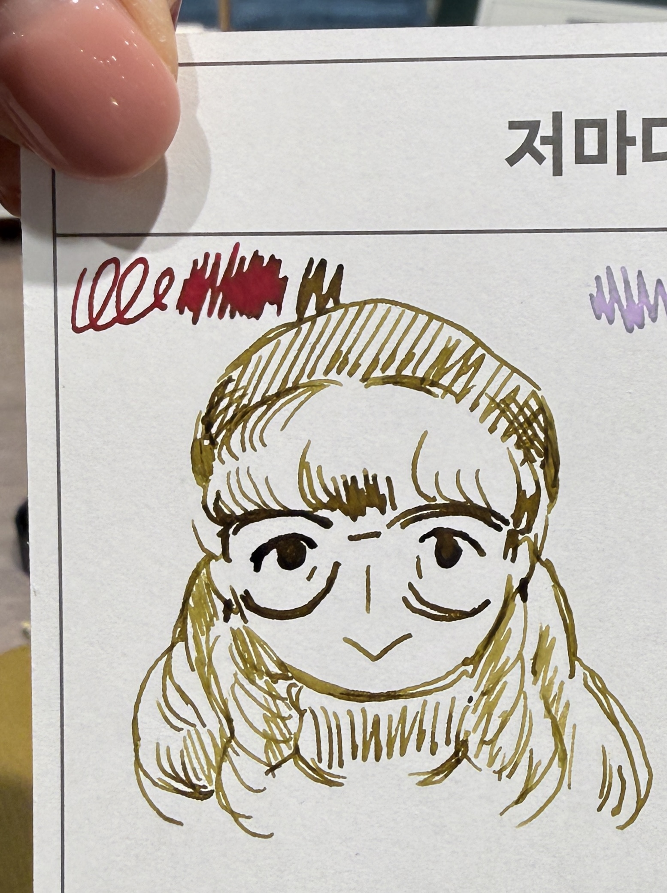
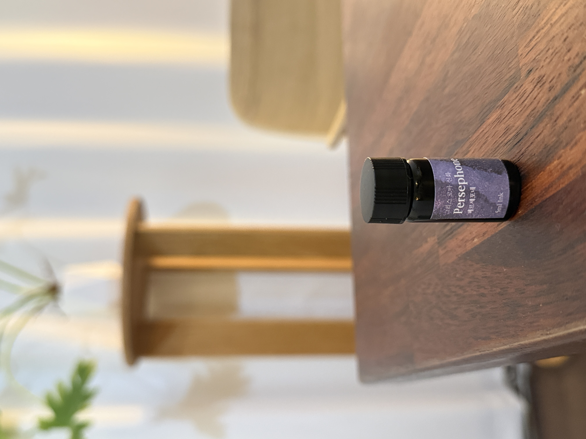
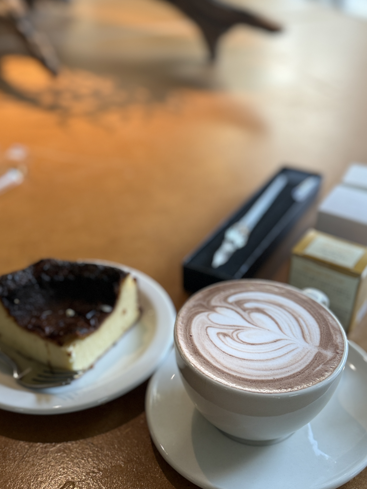

둘이 만드는 이야기 3.

01 / 그림 그리는 다이어리
다이어리가 그림 작업을 하는 동안 저는 그림 그리는 다이어리를 그려 봤어요. 아직 크로키가 익숙하지 않아 오래 걸리다 보니, 나중에는 모델을 보지 않고 그렸다는… ㅎㅎ


02 / 서로의 얼굴
수능 날 이벤트로 수험표를 만들면 할인을 해 주고 있었어요. 그래서 서로를 그려 줬죠. 제가 그린 다이어리와 다이어리가 그린 브리또예요. 다이어리, 미안! ㅎㅎㅎ
오늘도 우리의 잉크 사랑은 계속되고 있어요. ㅎㅎ

03 / 작은 채집
참새가 방앗간을 그냥 못 지나가듯 다시 잉크숍에 들러 작은 잉크를 하나 겟했어요. 행복해하는 제게 다이어리가 이런 이야기를 들려줬어요.
“인간의 뇌는 원시인의 뇌로부터 그다지 진화하지 않은 상태여서, 낯선 곳에서 무언가를 수집하는 활동에 행복감을 느낀대요. 수렵과 채집의 본능을 만족시키는 행위이기 때문이죠.” 오호~!

04 / 소소한 행복
카페에서는 예술 같은 라테 아트와 함께 새로 채집한 녀석들을 테스트하며 행복해했어요.
인생 뭐 있어요? 이런 소소한 행복으로 삶의 질을 높이는 거죠. 여러분도 한 번 해 보세요.